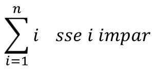

Ficha07_002
Somar se e só se
Soma dos números Impares no intervalo[1, 10[
NOTA:
Os ímpares distam uns dos outros de 2 unidades (passo 2)
|

|


C++
// Programmer Ant0ni0 M@ns0 - Ant0ni0 M@ns0
#include <iostream>
#include <cstring>
#include <cmath>
using namespace std;
// Class definition
class Ficha07_002 {
public:
int main() {
cout << "Somatório passo 2\n";
int soma = 0 ;
int i = 0 ;
for( int i = 1; i < 10; i = i + 2 ) {
cout << soma << " + " << i ;
soma +=i;
cout << " \t= " << soma << "\n";
}
cout << "\nSoma = " << soma ;
return 0;
}
};// end of class Ficha07_002
// Execute main function
int main(){
Ficha07_002 application; // create object
application.main(); // execute object
return 0;
}
//C++ - Automatic translated by Algorithmi 22.05
//(c) Ant0nio M@nso Mon, 2022 Sep 26 16:13
Download Ficha07_002.cpp
Algorithmi 22.05 Student version
(c) Antonio M@nso 2022
Instituto Politécnico de Tomar - All rights reserved